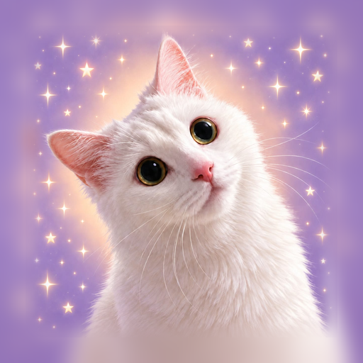

Luna
Çalışma arkadaşın, artık telefonunda bir uygulama
Android uygulaması
Android 7 ve üstü · her zaman en yeni sürüm
✨ Bu sürümde
🐾 Kurulum
- 1Luna'yı indir'e bas.
- 2Chrome "Bu dosya zarar verebilir" derse Yine de indir'e bas. Bu uyarı Play Store dışından gelen her uygulamada çıkar.
- 3İnen dosyaya dokun. İlk seferde "Bu kaynaktan izin ver"i aç, sonra Yükle.
- 4Play Protect sorarsa Yine de yükle. Luna açılınca hazırsın.
💜
Güncellerken de aynı adımlar. Yeni Luna eskisinin üstüne kurulur; çalışmaların, notların ve rozetlerin olduğu gibi kalır.
🍎 Bu sayfa Android içindir
iPhone ve iPad'de Luna'yı Safari'den kullanabilirsin:
Luna'yı aç